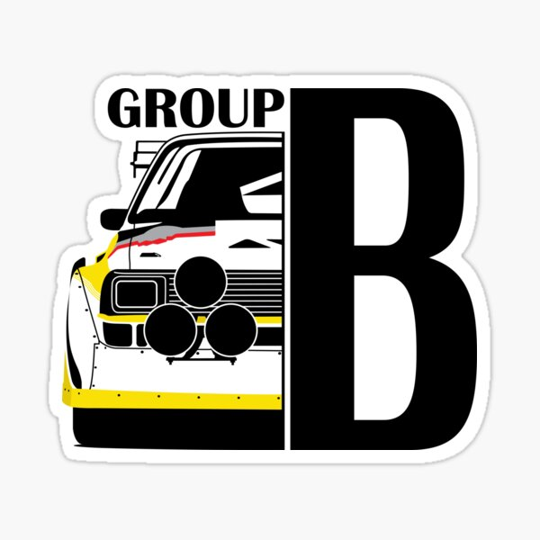
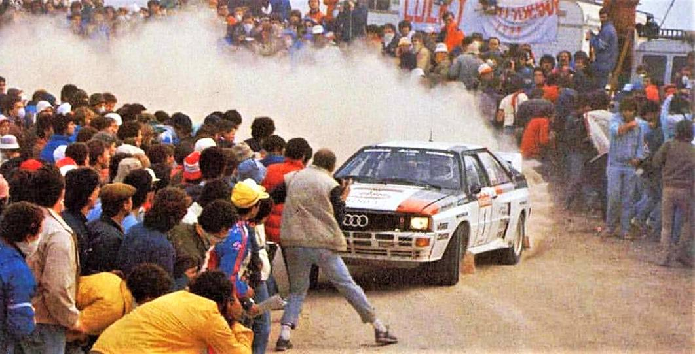

El Grupo B de rallyes representa la cúspide de la tecnología, la velocidad sin filtros y la audacia en la historia del automovilismo mundial. Nacido a finales de 1982 por iniciativa de la Federación Internacional del Automovil (FIA), este reglamento surgió en un momento en que las marcas reclamaban mayor libertad técnica y un escaparate comercial más potente para sus modelos de serie. Para conseguirlo, la FIA diseñó una normativa extraordinariamente abierta que exigía una producción mínima de apenas 200 unidades de calle para poder homologar una versión de competición pura y dura (la llamada Evo), abriendo la puerta a una reinterpretación radical del concepto de coche de carreras.

El Grupo B de rallyes representa la cúspide de la tecnología la velocidad sin filtros y la audacia en la historia del automovilismo mundial y su recorrido por el Campeonato del Mundo entre 1982 y 1986 estuvo lleno de hitos extraordinarios que revolucionaron este deporte para siempre impulsado por una normativa de homologación muy flexible que exigía apenas doscientas unidades de calle lo que permitió a fabricantes como Audi Peugeot Lancia y Ford desatar una carrera armamentística sin precedentes creando auténticos prototipos de competición con carrocería de calle dotados de chasis de materiales exóticos y motores sobrealimentados de tracción total que escalaron vertiginosamente desde los trescientos caballos iniciales hasta superar los quinientos o seiscientos caballos en máquinas capaces de volar sobre tierra asfalto hielo y barro generando un espectáculo masivo y una popularidad global comparable o superior a la Fórmula 1 abarrotes de aficionados en las cunetas y consagrando a una generación irrepetible de leyendas del volante como Walter Röhrl Stig Blomqvist Juha Kankkunen Timo Salonen o Henri Toivonen cuyas exhibiciones de pilotaje al límite y dominio de la tracción integral sentaron las bases técnicas de los rallies modernos y dejaron un legado imborrable como la época más salvaje y apasionante del motor